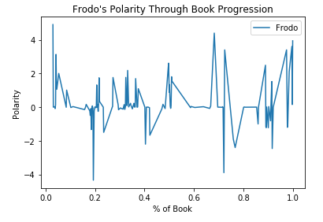
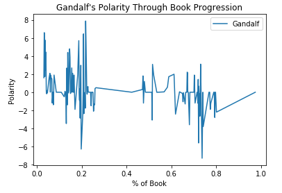
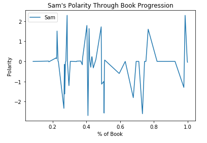
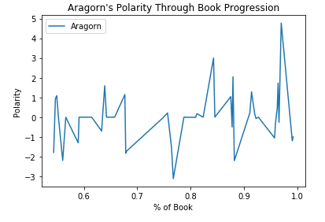
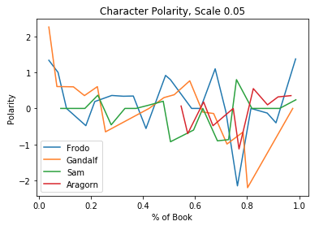
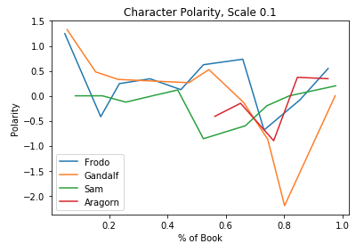

Progressive Sentiment Analysis of Characters
In this tab, I analyzed the sentiment of each character throughout the progression of the book. In analyzing the data, I firsed parsed through each character and mapped each character talking to the location of the book (% wise), and evaluated the sentiment through utilizing the Vader Lexicon. It was then a good mapper to note the change in polarity as the book progressed. However, plotting each individual point and graphing it showcased extremely volatile lines. Therefore, I smoothed out the curves by averaging out between 0.05 portions of the book, and then 0.10 portions of the book.


The left image is visualization of Frodo's polarity throughout the book, and the right image is of Gandalf's.


The left image is visualization of Sam's polarity throughout the book, and the right image is of Aragorn's. Aragorn begins at the second half of the book.


The left image showcases a smoothing of all of the plots together at intervals of 5%. I took the average polarity of 5% portions of the book and then plotted them against the book's progression. The right image showcases a smoothing done at 10% segments of the book. It's clear that there's a trade off between smoothing out the curve and an actual valuation of the polarity at that specific location.